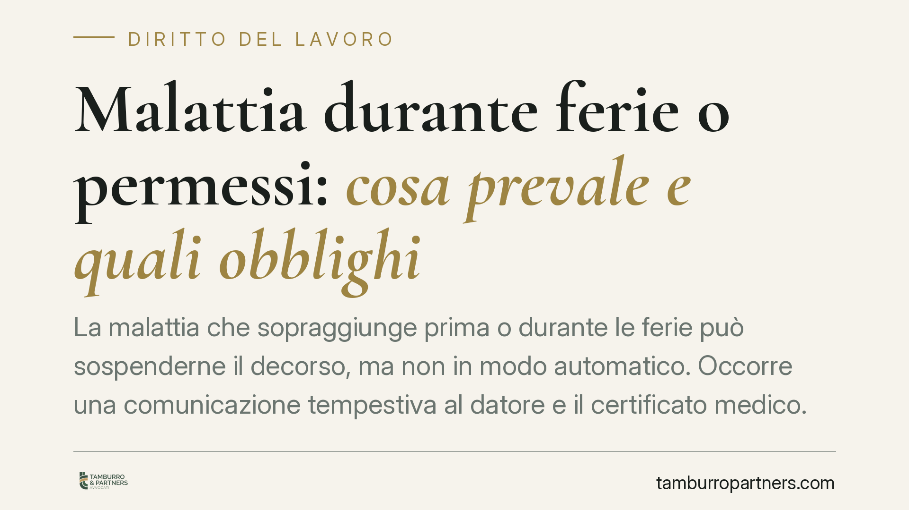

Malattia durante ferie o permessi: cosa prevale e quali obblighi
La malattia che sopraggiunge prima o durante le ferie può sospenderne il decorso, ma non in modo automatico. Occorre una comunicazione tempestiva al datore e il certificato medico. Restano fermi il potere organizzativo dell'azienda e il rischio di licenziamento in caso di abuso. Chiariamo cosa dice la giurisprudenza e come comportarsi in concreto.

Il caso e perché conta
Un lavoratore prenota le ferie, oppure ha già ottenuto un permesso, ma poco prima si ammala. Le ferie "saltano" e si convertono in malattia? Oppure il periodo di riposo resta consumato, con l'aggravio della patologia?
La questione non è teorica. Ferie e malattia rispondono a funzioni diverse: le prime tutelano il recupero delle energie psicofisiche, la seconda tutela la salute compromessa. Quando le due situazioni si sovrappongono, la giurisprudenza ha stabilito criteri precisi.
Inquadramento normativo
Il riferimento è l'art. 2109 del codice civile, che riconosce al lavoratore il diritto a un periodo annuale di ferie retribuite e attribuisce al datore di lavoro il potere di stabilirne la collocazione, tenuto conto delle esigenze dell'impresa e degli interessi del prestatore.
La Corte costituzionale, con la sentenza n. 616/1987, ha affermato che la malattia sopraggiunta durante le ferie ne sospende il decorso, perché lo stato patologico è incompatibile con la funzione di recupero propria del riposo. La Cassazione ha poi precisato che la sospensione non è però automatica: opera quando la malattia è di tale gravità da impedire effettivamente il godimento delle ferie. Un malessere lieve, compatibile con il riposo, non produce l'effetto sospensivo.
Lo stesso principio si estende, con i dovuti distinguo, ai permessi già richiesti: la malattia, in quanto evento sopravvenuto tutelato in via prioritaria, prevale sulla diversa causa di assenza, purché il lavoratore assolva gli obblighi di comunicazione e certificazione.
Implicazioni pratiche
Per il lavoratore, questo significa che ammalarsi prima o durante le ferie non comporta automaticamente il recupero di quei giorni. La conversione da ferie a malattia dipende da due condizioni: la gravità della patologia e il corretto adempimento degli obblighi formali.
Il certificato medico va trasmesso con le modalità di legge. L'INPS riceve la certificazione telematica; il lavoratore deve comunque avvisare tempestivamente il datore di lavoro, indicando l'indirizzo di reperibilità per l'eventuale visita di controllo.
Per il datore di lavoro, il potere organizzativo sulla collocazione delle ferie resta fermo. L'azienda può, in ipotesi, decidere di riprogrammare il periodo di riposo interrotto dalla malattia, compatibilmente con le esigenze produttive. Non può però negare il valore sospensivo di una malattia grave e ritualmente comunicata.
Particolare attenzione al tema dell'abuso. Quando la malattia viene simulata o strumentalizzata per prolungare il riposo, o quando il lavoratore svolge durante l'assenza attività incompatibili con lo stato dichiarato, si configura una condotta che può integrare giusta causa di licenziamento. La giurisprudenza è severa: l'incompatibilità tra la patologia certificata e il comportamento tenuto legittima il recesso disciplinare.
Cosa fare in concreto
- Comunica subito. Al primo insorgere della malattia avvisa il datore di lavoro senza attendere, anche se le ferie o il permesso erano già approvati.
- Fatti certificare. Richiedi al medico il certificato telematico e verifica che sia trasmesso all'INPS; conserva il numero di protocollo.
- Rispetta le fasce di reperibilità. Rimani all'indirizzo comunicato negli orari previsti per la visita fiscale, salvo giustificato motivo documentabile.
- Non svolgere attività incompatibili. Evita comportamenti che contraddicano lo stato di malattia dichiarato: sono la prima fonte di contestazioni disciplinari.
- Chiedi conferma sul recupero dei giorni. Verifica per iscritto con il datore la riprogrammazione delle ferie sospese, per evitare contestazioni successive.
In presenza di contestazioni sulla gravità della malattia o di procedimenti disciplinari legati a un presunto abuso, consigliamo di raccogliere per tempo la documentazione medica e di far valutare la posizione prima di rispondere alle contestazioni aziendali.
Disclaimer
Contributo informativo a cura di Tamburro & Partners - Avv. Giuseppe Tamburro. Non costituisce parere legale.
Ogni storia di lavoro ha i suoi tempi.
Se gestisci HR e vuoi un confronto su contenzioso, ispezioni o licenziamenti, scrivi allo studio. Ti rispondiamo entro un giorno lavorativo.